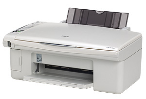
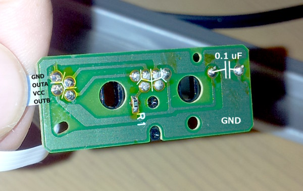
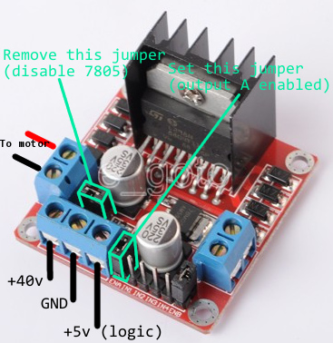
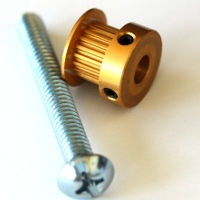
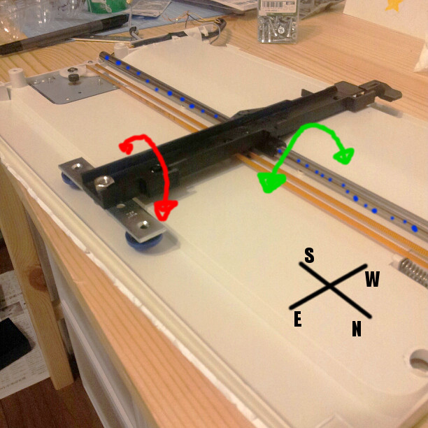
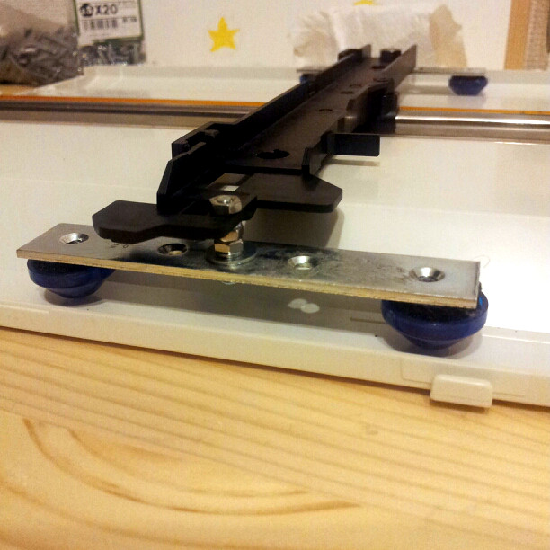
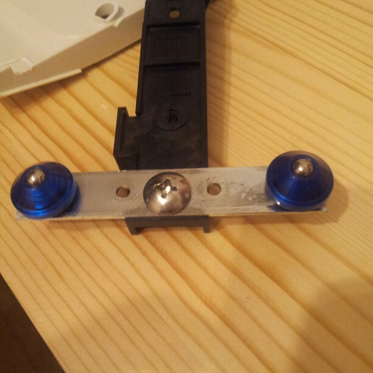
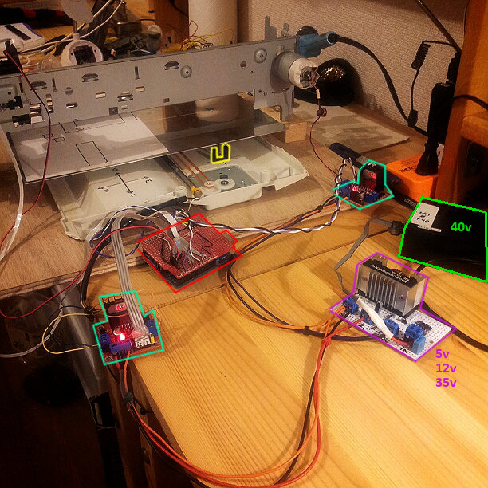

Forces in presence

Electronic
- Arduino/Arduino clone of course : the net is full of look-alike projects
Power
- The alim of the printer
Laser
- Ebay help me!
Bearings and moving stuffs
- A scavenged bed scanner or inkjet printer ? Get ripped off by Tokyu Hands or some guy in Akiba ?
- Yahoo auctions -> bought a combo Epson printer/scanner
General construction
- Wood and MDF because it's cheap and I don't have tools to work metal.
Software
- GRBL seems to be a easy solution with arduino so let's check it
Making process
1- Scavenging the printer
From the Epson PM-A700 I scavenged the print head rail and motor (looks good and strong DC motor and position combo), the scanner motor and rail (Stepper motor but look not quite strong though), the paper moving motor (DC motor) and the alim (spits %2040v with no load ... need to check that)2- Taming the Printer head motor
2.1- Printer head position
It's a big strong DC motor that looks like to work nice with 35 V (Mabuchi RS-445PA (14233)). The position can be checked using a transparent stripped band that runs along the motor belt and a small circuit that reads the "position" or more precisely the movements (counts the dark bars). The circuit has a VCC & GND input and 2 bipolar output.") |
| Simple Incremental Encoder (not exactly what we have here but close enough) |
The 2 output wires return high or low when the head moves and the stripes goes in front of the reader chip. But easier is that each wire is in fact TTL level. It is a positional code type "Simple incremental encoder" http://www.electronics-tutorials.ws/io/io_2.html
The setup is that when the head moves the position reader generate state change each time it moves. Just wire the position head to a external interrupt of the Arduino and "count" the plus or minus on each state change of the pin depending of which direction you go. The main code while moving moves and check the "position counter" and stops when you're arrived. Not perfect, but okay for a beta version. FYI I use just one of the two position counter which is sufficient for now.

2.2- Power the printer head DC motor with a H-Bridge
I will use this eBay baby (4 USD http://www.ebay.com/itm/110953019447) but any H-Bridge configuration should be ok. I finally decyphered what was written on the motor, it's a Mabuchi RS-445PA (14233) that works in the 12-40v range (!) (Specs are http://www.mabuchi-motor.co.jp/cgi-bin/catalog/e_catalog.cgi?CAT_ID=rs_445papd) which is "ok" with the H-Bridge module that works on the 5-35V (specs says 46V but...). I will just need to provide the 5v since the maker advise to not use the on-board 7805 if fed more than 12v.
Setup is the following : reuse the 40v alim from the printer, reduce it around 35v with a serie of diodes, use a DC-DC converter to make it 5v to feed the logic (arduino) and 35v to feed the motor.
- The IN1 and IN2 are linked to the PWM capables pins 9 and 3 of the Arduino (in that order).
- Nota-bene: the GND of the driver must be linked to the GND of the Arduino (otherwise because the level of GND are different the driver can't understand properly the PWM).
- The stopper contacter must be linked to GND one side and to Arduino pin 2 (pin D2).
- The position reader must be wired to GND-ADC0-VCC-xxx (GND side has a black marker).
2.3- Replacing the DC motor by a Stepper ?
It's just a question now, I've not done it. Problem is that maybe due to my inexperience but also to DC motors, it's hard to drive them precisely. Stepper motors without any headbanging archieve a 1/6th or 1/10th of mm precision. But thoses DC motors move via a belt and a drive pulley and need to fight the original inertia. Problem is that the thin (and random) limit between the energy to move the head and the inertia that will push the head too far. Experimentally (hum hum) I found a PWM value that looks ok but I'm concerned with the precision.In case I change that later, the ebay magic keyworks to get the part to put on top of the stepper to drive the belt are pulley teeth stepper (just a reminder, I spent 1 h searching how the rest of the world call these things).
3- Taming the scanner Bed motor
Scavenged from the scanner part of the Epson PM-A700, the motor is a stepper motor running at 12v : Mitsumi M35SP-11NK.Color code of the connector is : coil1 [orange-brown] and coil2 [black-yellow].
Coils read 40 ohm, sheet says 25 ohm, one guy says 8ohm ... well. It works with 5v (not much torque) and 12v (feels more like it boy!) but at 12v the motor itself and driver get hot quickly. Can still touch it though, we're clearly less than 50C but maybe I'll put a current limiting resistor ? Will depend on real life result.
For memory, here's how the wiring works with the sample program bipolar_stepper.ino :
- Coil 1 : arduino 6-7 → driver board IN 1-2. Wires on connector A are (farthest from radiator first) black and yellow
- Coil 2 : arduino 11-12 → driver board IN 3-4. Wires on connector B are (farthest from radiator first) brown and orange
Wiring for the bipolar stepper. Motor VCC is 5v (see more below).
The stepper motor does 3.75 degrees per step means 96 steps for 1 full turn. I noticed however that it was not enough to make one turn of the final wheel (there's 2 intermediate wheels). In fact experimentally I found that there's a reduction factor of 2/3 means you need 96 * 1.5 = 144 steps to do one turn with the wheel that drives the rubber band.
Notabene : as per experiment, one needs 6 steps to make the bed move 1mm.
3.1 - stepper motor voltage
When I feed it with 5v it works fine but gets quite hot. It's hot but you can keep your hand on it, means it's not hot per the standard of stepper motors. I'd like to give a try with a higher voltage (and lesser current). Currently anyway there's not limiting current and that could be a very bad idea on long term or under load. Let's do some calculations.Links:
- http://www.parkermotion.com/dmxreadyv2/faqsmanager/faqsmanager.asp?question=965
- http://forum.allaboutcircuits.com/showthread.php?t=64116
- http://homepage.divms.uiowa.edu/~jones/step/current.html
3.2 - bed plateau
I need a flat area -the plateau- to move but at the origin I have only a 2cm plastic bar (formerly the holder of the scanner head). I made 2 skates for the bar to give it more stability and forbid any tilt of the bar. Thee the plateau (a 200x300x0.8mm aluminium plate) is carefully centered and fixed to the now very stable bar. So the plateau itself if not ultra stable but if the weight of the to-be-cut material is centered enough, that should work fine at the beginning.The both skates rely on small metal ball encased in blue plastic pyramids and the "track" they follow is carefully greased with cheap lithium grease.

The first skate installed : along the blue axis the skates forbid tilt on the green and red axis

The blue pyramid are those cheap metal ball mounted in plastic to move your small furnitures around
4- Axis assembly
Put both axis at 90 degrees angle and wired all to a Arduino shield.
Setup : 40v printer power supply (green), transformer to 5v/12v/35v (purple), 2 motor driver (in cyan), an Arduino with a vanilla shield and wire-orgy (in red) and the stopper position of the bed (in yellow)

The first star drawn with a pen thanks to a quick Bresenham algo and after tuning of the head PWM ... not bad as a start
5- LCD module
Display is a cheap knockoff Nokia 5110 LCD. To drive it easily I put a ATtiny2313 for the display and status led control. Communication between the main Arduino and the display module is done over I2C. This removes the burden of unnecesary code on the Arduino main controller side, and was a good occasion to play with other micro-controllers and I2C as slave.6- Laser
Main page : Arduino and a laser.7- Source code
Prototype version
Prototype is done with Arduino IDE (which is a punition to use), Arduino libs etc ... not a big fan but for prototype it's still one of the best option.On Google SVN http://code.google.com/p/alanarduinotools/source/browse/#svn%2Ftrunk%2FLaserCutterController
For the LCD module see the project http://code.google.com/p/alanarduinotools/source/browse/trunk/#trunk%2FAttiny2313 ⇒ LaserCutterDisplayController project.
Release version
I plan rewrite everything with ATmel studio 6, nice and sexy and possibly get rid of the Arduino. That's for later.About G Code
G Code, the universal language of the CNCs and in extenso the Laser cutters. Options : reimplement a subset of G Code for my cutter or reuse an existing library...Some doc :
- Aide memoire G Code http://linuxcnc.org/docs/html/gcode_fr.html
- How it was implemented for another laser cutter http://www.shapeoko.com/wiki/index.php/Laser_Cutter
- GRBL seems to be a easy solution with arduino so let's check it https://github.com/grbl/grbl
Documentation
General making
- A very good one with many many explanation and tutorial http://www.buildyourcnc.com
- A guy made a extra nice one here, let's get inspiration http://www.cnczone.com/forums/benchtop_machines/157385-ryans_g0704-16.html#post1228914
- Another realisation, less detailed but using the Mutsumi motor http://laser530.blogspot.jp/2010/10/computer-setup.html
Laser related
- http://laserpointerforums.com/f51/i-want-build-laser-thread-52972.html#post740462
- In french http://xtrem-experiences.com/categories/electro/104-coilgun-railgun-taser-laser/137-briquet-laser-2w
Controller
- A very nice shield build ! http://blog.protoneer.co.nz/arduino-cnc-shield/
Shopping
Shopping list
- Mechanic
- Combo printer scanner from Epson : 1 JPY from yahoo auctions (%201500 JPY shipping fees ... (-_-;))
- Aluminium sheet 200x300x0.8mm : 590 JPY
- Drawer slides : 633 JPY didn't use it in the end
- Motors
- Motor drivers double H drive from eBay : 2x 4 USD
- Electronic
- Arduino UNO 2,000 JPY
- Arduino vanilla shield 300 JPY
- DC/DC converter to 5v/12v 300 JPY (http://akizukidenshi.com/catalog/g/gM-02044/)
- IR detector for bed position 50 JPY
- Stopper tact switch for head 0 JPY (taken from an old CD reader)
- Caps, resistors, wires, ... <1000 JPY
- Laser
- 2W 445nm laser with copper enclosure and focusing lens 75 USD (eBay)
- 2W Laser%20fan TTL driver 8 USD (won eBay auction)
- Box
- 2 cleats of pine 2.4x3cm : 2x 420 JPY
- A box of screws : 252 JPY
- Plywood 450x450mm : 509 JPY
Just buy it ?
- A laser
- A full laser cutter
- http://www.laser-velocity.jp/
- Yahoo Auctions Japan : search 「レーザー加工機」